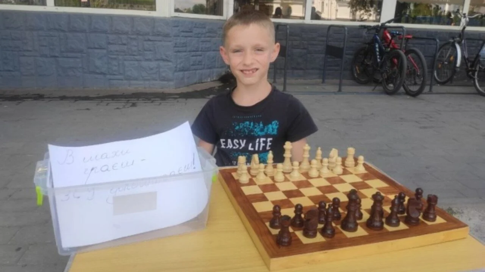
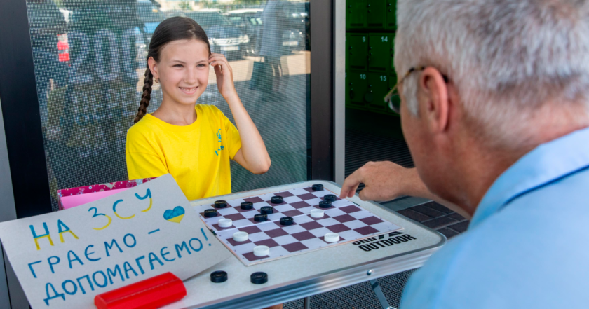
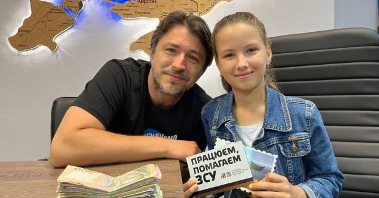
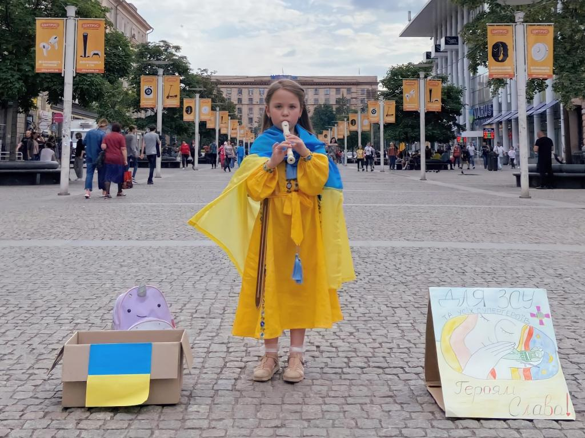
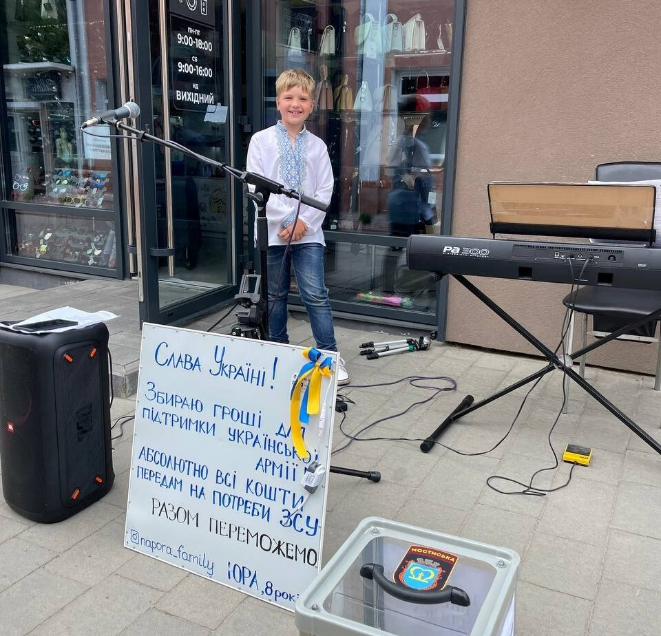

Маленькі українці-волонтери, якими ми пишаємось:
-
Восьмирічний Савелій, який переїхав з Бучі до Луцька, займається шахами чотири роки. Аби допомогти українським військовим, він грає в шахи на гроші з перехожими на центральній вулиці Луцька. Підтримують у такому волонтерстві хлопця мама та дідусь. Фіксованої суми для гри немає — люди залишають, хто скільки може. 
-
А десятирічна Валерія Єжова зібрала та передала у фонд Сергія Притули 21 тисячу гривень. Дівчинка грала в шашки з перехожими на гроші, сидячи біля супермаркету в Києві. Валерія не програла жодної гри, адже вона — чемпіонка світу та Європи з шашок.
  -
Маленька Соломійка з Дніпра грає на вулицях міста на сопілці. Мама Соломійки каже, що дівчинка зібрала вже 118 000 гривень. За ці кошти придбали два бронежилети, а також планується купівля приладу нічного бачення. Зібрані кошти юна волонтерка направляє до фонду "Повернись живим". 
-
8-річний хлопчик зі Львова Юрій Напора гастролює з батьком містами області та збирає гроші для українських військових. Хлопчина співає українських пісень під акомпанемент батька. Юрій уже виступив у Мостиськах, Городку та Новояворівську. На останньому концерті вдалося зібрати понад 14 тисяч грн, а загалом сума зібраних грошей на концертах сягає понад 70 тисяч.
